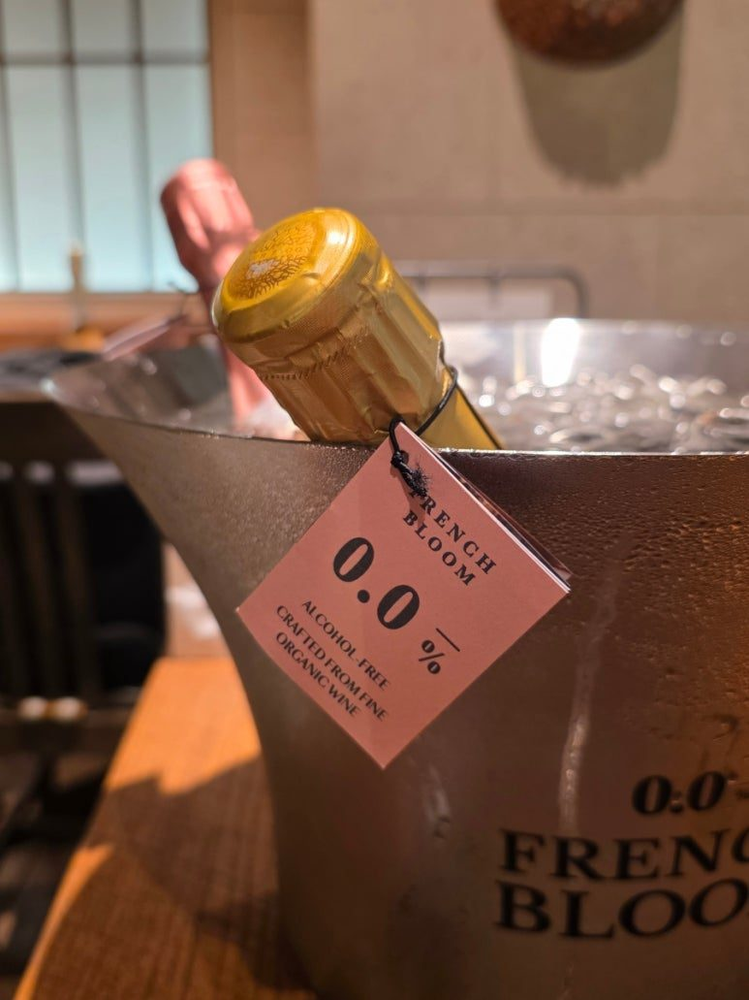
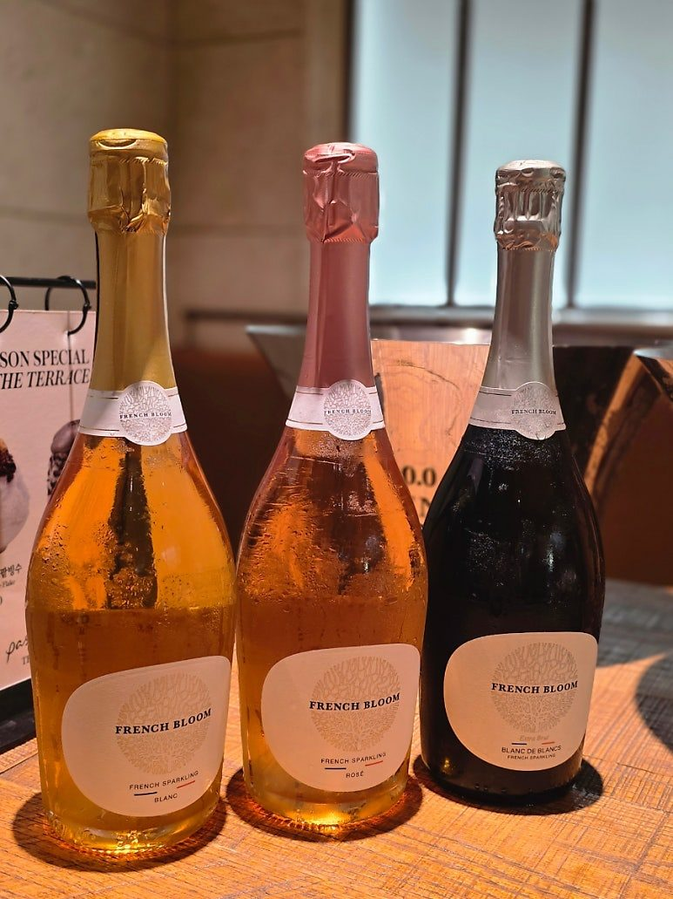
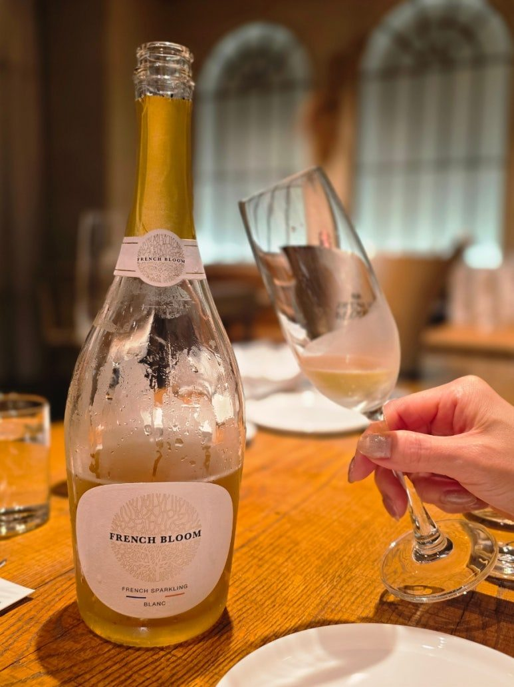
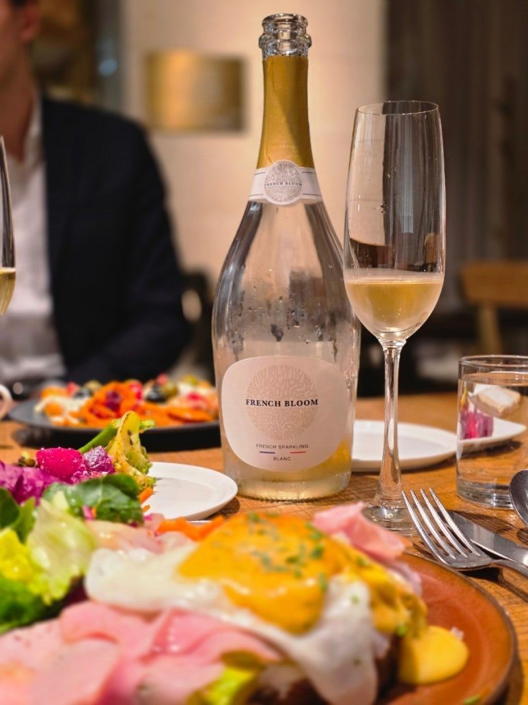
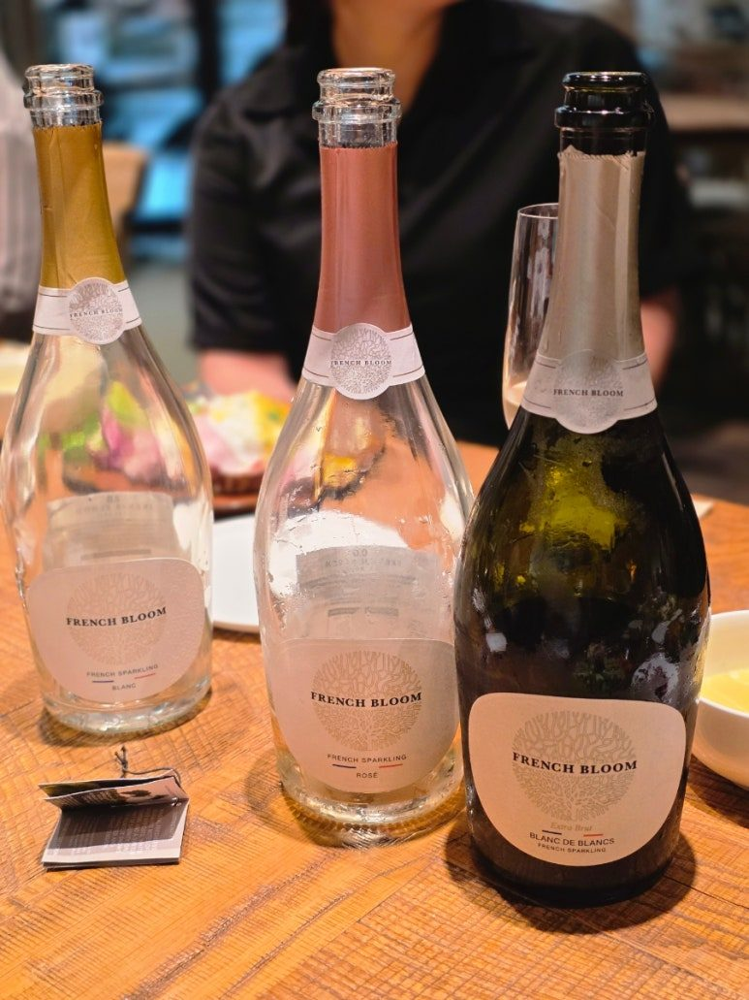
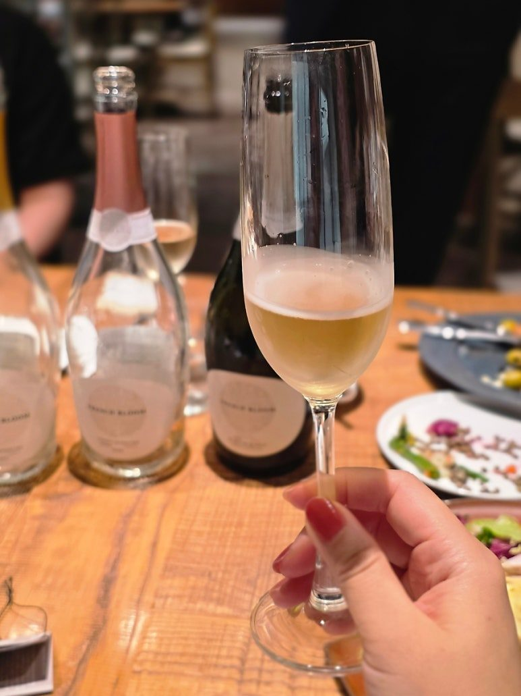
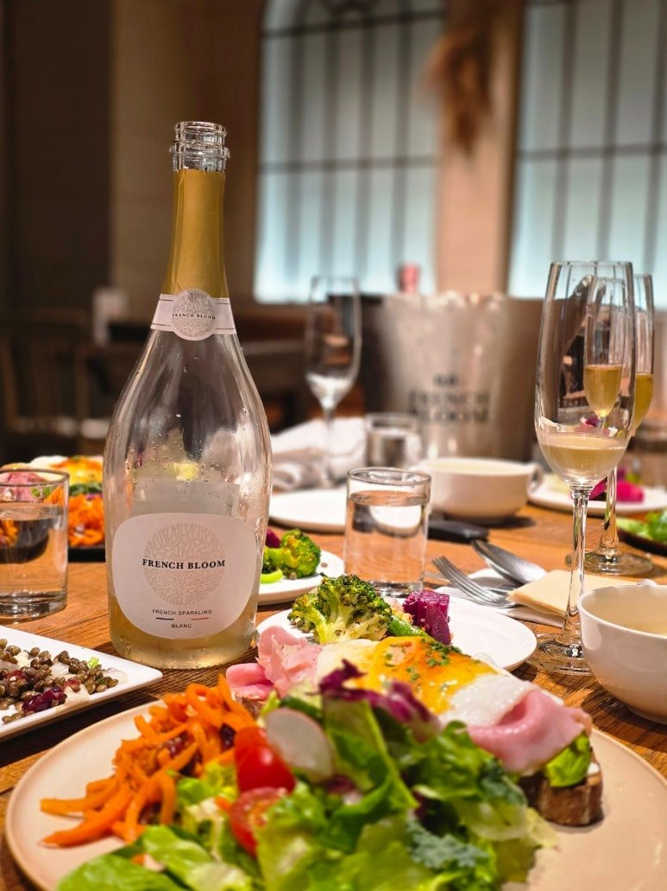

프렌치 블룸 르 블랑
샴페인 대신 즐기는 프리미엄 논알코올 스파클링
술을 마시지 않는 사람도 특별한 자리에서 함께 잔을 들 수 있을까?
술을 마시지 않는 사람도 특별한 자리에서 함께 잔을 들 수 있을까?
최근 논알코올 음료 시장이 커지면서 단순히 '술을 대신하는 음료'가 아니라, 와인처럼 우아하고 음식과도 잘 어울리는 논알코올 스파클링을 찾는 분들이 많아졌습니다.
오늘 소개해드릴 제품은 그중에서도 프리미엄 논알코올 스파클링을 이야기할 때 빼놓기 어려운 프렌치 블룸 르 블랑(French Bloom Le Blanc)입니다.
프랑스산 유기농 샤르도네를 베이스로 만든 0.0% 논알코올 스파클링으로, 상쾌한 시트러스와 배의 풍미에서 시작해 말린 과일과 꿀, 벌집을 연상시키는 깊이 있는 풍미로 이어지는 것이 특징입니다.
특히 프렌치 블룸은 단순히 '무알콜 와인' 하나를 만든 브랜드가 아닙니다.
미슐랭 가이드 출신의 미식 전문가와 세계적인 톱모델이 만나 만든 브랜드라는 독특한 탄생 배경부터 살펴볼 필요가 있습니다.


프렌치 블룸, 누가 만들었을까요?
프렌치 블룸은 Maggie Frerejean-Taittinger(매기 프레르장-데땅저)와 Constance Jablonski(콩스탕스 자블롱스)가 만든 브랜드입니다.
두 사람은 오랜 친구 사이로 지내다 2019년 파리에서 다시 만나게 됩니다.
당시 매기는 미슐랭 가이드의 디렉터로 일하고 있었고, 콩스탕스는 세계적인 톱모델로 활동하고 있었습니다.
서로 전혀 다른 분야에서 활동했지만 두 사람에게는 공통된 고민이 있었습니다.
바로 술을 마시지 않는 순간에도 충분히 세련되고 특별한 음료를 즐기고 싶다는 것이었습니다.
가족이나 친구들과 함께하는 자리에서 축하를 위해 잔을 들고 싶어도, 당시에는 고급 레스토랑이나 파티의 분위기에 어울리는 논알코올 음료를 찾기가 쉽지 않았습니다.
그렇게 시작된 아이디어가 바로 French Bloom입니다.
처음부터 목표는 단순했습니다.
"알코올이 없어도 샴페인을 마시는 것처럼 특별한 순간을 만들 수 있게 하자."
그래서 프렌치 블룸은 처음부터 프리미엄 논알코올 스파클링이라는 방향을 선택했습니다.

프렌치 블룸 르 블랑은 어떤 제품인가요?
French Bloom Le Blanc은 프랑스산 유기농 샤르도네 와인을 기반으로 만든 0.0% 알코올 논알코올 스파클링입니다.
프렌치 블룸 공식 설명에 따르면 유기농 프렌치 와인을 탈알코올화한 뒤, 프랑스산 탄산수와 포도 주스, 유기농 레몬 주스, 천연 포도 향 등을 사용해 최종적인 풍미와 밸런스를 완성합니다.
여기서 중요한 것은 샤르도네입니다.
샤르도네 특유의 산뜻한 산도와 미네랄리티가 바탕에 있기 때문에, 르 블랑은 단순히 달콤한 포도 음료처럼 마시는 제품보다는 상쾌하고 깔끔한 화이트 스파클링을 연상시키는 방향에 가깝습니다.
특히 공식 테이스팅 노트에서도 르 블랑의 핵심을 미네랄리티와 신선함, 배의 풍미로 설명하고 있습니다.
프렌치 블룸 르 블랑의 첫인상
잔에 따르면 먼저 밝고 투명한 컬러와 섬세한 기포가 눈에 들어옵니다.
그리고 잔을 가까이 가져가면 가장 먼저 느껴지는 것은 상쾌한 시트러스와 배의 향입니다.
레몬 제스트처럼 싱그러운 시트러스 향이 먼저 올라오고, 이어서 아삭한 배와 신선한 과일의 느낌이 더해집니다.
이때 특유의 미네랄리티가 함께 느껴져서 전체적으로 상당히 산뜻한 첫인상을 줍니다.
입안에서는 의외로 부드럽습니다
르 블랑의 재미있는 부분은 첫인상과 달리 입안에서는 꽤 부드럽고 실키한 질감이 느껴진다는 점입니다.
신선한 과일과 배의 풍미가 이어지고, 이후에는 말린 과일과 꿀, 벌집을 연상시키는 풍미가 나타납니다.
공식 테이스팅 노트에서도 르 블랑의 풍미를 시트러스 제스트 → 크리스프한 배와 신선한 과일 → 말린 과일, 꿀, 벌집 순으로 설명하고 있습니다.
마지막에는 깔끔하면서도 짭짤한 느낌의 살린 피니시가 남습니다.
그래서 단순히 '상큼하고 달콤한 논알코올 음료'라고 생각하고 마시면 오히려 조금 의외일 수 있습니다.
신선함과 미네랄리티, 과실감과 깊이가 함께 있는 스타일입니다.
French Bloom Le Blanc Tasting Note
AROMA
🍋 레몬 제스트
🍐 아삭한 배
🍏 신선한 과일
🌼 은은한 화이트 플라워
PALATE
상쾌한 시트러스와 배의 풍미
부드럽고 실키한 질감
말린 과일과 꿀의 은은한 깊이
FINISH
미네랄리티가 느껴지는 깔끔하고 살린한 피니시
BODY ●●●○○
ACIDITY ●●●●○
SWEETNESS ●●○○○

르 로제와 비교하면 어떤 차이가 있을까요?
프렌치 블룸을 처음 접하시는 분이라면 Le Blanc과 Le Rosé 중 어떤 것을 선택해야 할지 고민될 수 있습니다.
두 제품 모두 0.0% 논알코올 스파클링이지만 스타일에는 차이가 있습니다.
Le Blanc은 샤르도네를 중심으로 시트러스, 배, 미네랄리티가 중심입니다.
반면 Le Rosé는 장미 꽃잎과 붉은 베리, 화이트 피치처럼 조금 더 화사하고 과실 중심의 인상을 줍니다.
쉽게 표현하면,
깔끔하고 산뜻한 화이트 스파클링을 좋아한다면 → Le Blanc
화사하고 과일 향이 풍부한 로제 스타일을 좋아한다면 → Le Rosé
라고 생각하면 선택하기 편합니다.
특히 음식과 함께 마실 목적이라면 르 블랑의 미네랄리티와 산도가 상당히 다양한 요리와 잘 어울리는 편입니다.
논알코올 와인인데 포도주스와는 무엇이 다를까요?
논알코올 와인을 처음 접하는 분들이 자주 하는 질문입니다.
"결국 포도주스에 탄산을 넣은 것 아닌가요?"
프렌치 블룸 르 블랑은 일반적인 포도주스와는 출발점이 다릅니다.
프랑스산 유기농 와인을 탈알코올화한 뒤 포도 주스, 레몬 주스, 천연 포도 향 등을 조합해 제품의 풍미를 완성합니다.
그래서 단순히 포도의 달콤한 맛만 강조하기보다는 산도와 미네랄리티, 과실감의 균형을 중요하게 생각한 제품입니다.
공식 제품 정보 기준으로 0.0% 알코올, 비건 인증, 유기농 프랑스 와인 사용, 무설탕 첨가, 무황산염, 무보존료, 글루텐 프리 등의 특징도 갖고 있습니다.
100ml 기준 열량도 10kcal로 표시되어 있어 가볍게 즐기기 좋은 점도 특징입니다.
르 블랑은 어떤 음식과 잘 어울릴까요?
프렌치 블룸 르 블랑은 로제보다 조금 더 음식 친화적인 스타일로 접근할 수 있습니다.
특히 샤르도네의 산뜻한 산미와 미네랄리티 덕분에 해산물이나 가벼운 전채요리와 좋은 조합을 만들 수 있습니다.
추천 페어링
🦪 굴 & 해산물
미네랄리티가 있는 르 블랑과 굴의 짭짤한 풍미가 잘 어울립니다.
🍤 새우·관자 요리
시트러스와 배의 산뜻한 풍미가 해산물의 담백함을 살려줍니다.
🐟 흰살생선
가벼운 소스를 곁들인 생선 요리와도 부담 없이 매칭할 수 있습니다.
🥗 샐러드
상큼한 드레싱을 사용하는 샐러드와도 잘 어울립니다.
🧀 소프트 치즈
부드러운 질감과 은은한 과실감이 치즈와 좋은 조화를 만들어냅니다.
🥐 브런치
크루아상, 샐러드, 에그 요리 등과 함께 즐기는 브런치 스파클링으로도 좋습니다.
프렌치 블룸 역시 르 블랑을 테이블 위의 다양한 음식과 함께 즐기는 스파클링으로 소개하고 있습니다.
가장 맛있게 즐기는 방법
프렌치 블룸 공식 권장 서빙 온도는 2~4℃입니다.
충분히 차갑게 칠링한 뒤 플루트 잔에 따라 마시면 르 블랑의 섬세한 향과 탄산감을 더욱 잘 느낄 수 있습니다.
특히 일반적인 와인잔보다는 스파클링 전용 잔에 차갑게 서빙하면 시각적으로도 훨씬 특별한 분위기를 만들 수 있습니다.
그리고 중요한 포인트 하나.
논알코올이라고 너무 가볍게 생각하지 않는 것.
르 블랑은 식사 시작부터 끝까지 함께할 수 있는 스타일이기 때문에 웰컴 드링크뿐 아니라 실제 음식과 페어링해서 즐겨보는 것을 추천합니다.
이런 분께 추천합니다
✔ 술을 마시지 않지만 샴페인 같은 분위기를 즐기고 싶은 분
✔ 너무 달콤한 논알코올 음료가 부담스러운 분
✔ 산뜻하고 깔끔한 화이트 와인 스타일을 좋아하는 분
✔ 운전이나 일정 때문에 알코올을 피해야 하는 분
✔ 브런치나 홈파티에 어울리는 논알코올 스파클링을 찾는 분
✔ 술을 마시지 않는 분에게 특별한 선물을 하고 싶은 분
✔ 음식과 함께 즐길 수 있는 프리미엄 논알코올 음료를 찾는 분
특히 "논알코올인데 너무 주스 같지 않았으면 좋겠어요."
라고 하시는 분이라면 르 블랑을 한번 경험해보셔도 좋겠습니다.


프렌치 블룸이 특별한 이유
프렌치 블룸의 가장 큰 매력은 단순히 알코올을 제거했다는 데 있지 않습니다.
술을 마시는 사람과 마시지 않는 사람이 같은 테이블에서 똑같이 특별한 경험을 할 수 있도록 만든다는 것.
이것이 프렌치 블룸이 처음부터 추구했던 방향입니다.
미슐랭 가이드 출신의 미식 전문가와 세계적인 톱모델이 시작한 브랜드.
프랑스산 유기농 샤르도네를 기반으로 하고,
시트러스와 배, 미네랄리티에서 시작해 말린 과일과 꿀, 벌집의 풍미로 이어지는 깊이.
그리고 0.0% 알코올.
그래서 프렌치 블룸 르 블랑은 단순한 '무알콜 음료'보다 하나의 제대로 된 스파클링을 즐기는 경험에 조금 더 가깝습니다.
술을 마실 수 없는 날에도,
운전을 해야 하는 날에도,
혹은 그냥 오늘은 술 없이 가볍게 즐기고 싶은 날에도.
좋은 잔을 들고 함께 건배하는 즐거움은 그대로 가져갈 수 있으니까요. 🥂
땡큐와인에서 추천하는 프렌치 블룸
프렌치 블룸 르 블랑과 르 로제는 같은 브랜드의 제품이지만 분위기가 꽤 다릅니다.
깔끔하고 미네랄리티 있는 화이트 스타일 → 르 블랑
화사하고 과실감 있는 로제 스타일 → 르 로제
선물인지, 홈파티인지, 기업 행사인지에 따라서도 어울리는 제품이 달라질 수 있습니다.
땡큐와인에서는 원하시는 예산과 수량, 선물 용도나 모임의 성격을 알려주시면 그에 맞는 와인을 추천해드립니다.
술을 마시는 사람만을 위한 와인이 아니라,
함께하는 모두가 즐길 수 있는 한 잔.
이번에는 프렌치 블룸 르 블랑으로 준비해보세요. 🥂

이 글은 땡큐와인 네이버 블로그에 먼저 올린 글이에요.